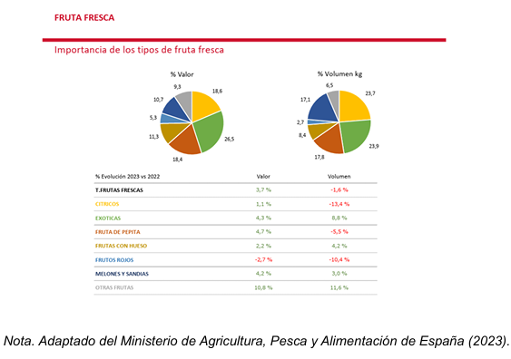
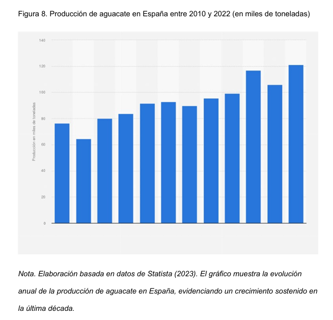

Análisis de datos sobre consumo y demanda en España El mercado español ha experimentado un cambio notable en los hábitos de consumo durante la última década, sobre todo en productos frescos y saludables, como el aguacate. Este producto, antaño considerado como un producto exótico en Europa, se ha sabido consolidar en la dieta mediterránea. Esto es gracias a su versatilidad en la cocina, sus beneficios nutricionales y su habilidad de adaptarse a nuevas tendencias de la alimentación como, por ejemplo, las dietas vegetarianas o keto. Según datos del Ministerio de Agricultura, Pesca y Alimentación de España. En España, el 80% de los hogares adquirieron aguacates durante la temporada pasada, evidenciando la fuerte presencia del producto en la dieta nacional. Aunque nuestro país es un importante productor de aguacates, especialmente en zonas como Andalucía y el Levante, la demanda interna sigue siendo alta, complementada por importaciones para poder satisfacer el consumo. (El Consumo De Aguacate Sigue Creciendo En Europa | Fruticultura, n.d.) Otro aspecto, las frutas exóticas (plátano, kiwi, aguacate, piña y chirimoya) son los tipos de fruta fresca que más se compran, englobando casi un cuarto del volumen del mercado (23,9 %) y siendo responsable de más de 1 de cada 4 € de la categoría (26,5 %). Su evolución con respecto al año anterior, tanto en volumen como en valor, en contra de lo que sucede en el sector, es positiva con aumentos del 8,8 % en volumen y 4,3 % en valor. El motivo se encuentra en una combinación de aspectos: el incremento de la propia conciencia sobre la salud, el propio posicionamiento del aguacate como "superalimento", y la cada vez más disponible del producto en supermercados, restaurantes y tiendas gourmet. Se trata de una gran oportunidad para los productores mexicanos dado que el aguacate Hass de México es conocido en todo el mundo por su calidad, su sabor y su textura, muy valorados por el consumidor español. Figura 7. Importancia de los tipos de fruta fresca en función del valor económico y el volumen en kilogramos. 
Aunque también existe producción nacional de aguacate en España, fundamentalmente en la comunidad autónoma de Andalucía, dicha producción no se halla en condiciones de abastecer la demanda del país, que adopta una política de importaciones activa. En este sentido, México puede convertirse en un proveedor constante y de confianza, permitiendo llegar con aguacates al mercado español incluso en meses en los que la producción nacional no es suficiente. Sumado a ser un producto que se puede ofertar durante todo el año, el aguacate mexicano cuenta con una calidad reconocida y diversas certificaciones, como por ejemplo GLOBALG.A.P., lo cual lo convierte en un producto competitivo y atractivo para este mercado en expansión.

Comparativa de la competencia internacional del aguacate en el mercado español La competitividad del mercado del aguacate en España presenta un más que considerable número de países exportadores que han estado intentando posicionarse y formar parte del grupo de proveedores fiables y de interés para los compradores. Las formas de competencia para México son Perú, Colombia o Marruecos, entre otros, los cuales presentan ciertas características que pueden ser consideradas atractivas para los compradores europeos. En este sentido, Marruecos tiene una ubicación estratégica que le permite exportar al menor precio, debido a los menores costes logísticos o por disrupciones en los tiempos de tránsito, formando parte de los puntos de recepción de los principales puertos españolas. El Perú ha sabido utilizar el modo de comercialización en meses opuestos con respecto a la temporada de ventas en Europa; como la de toda la producción local que puede estar en declive. La competencia de Colombia ha hecho que este país se introduzca por la producción nacional del aguacate Hass o el grado de institucionalización de la internacionalización anteriormente comentada.